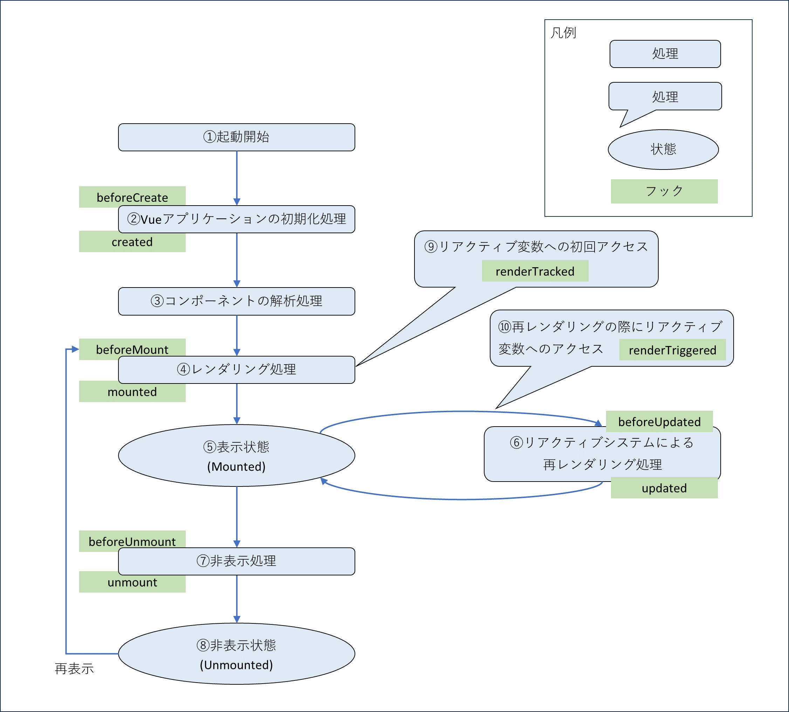

Vue.js/Nuxt
Vue.js
2020年9月にVue3がリリース。この時点では主要なモジュールがバージョン3未対応。2022年2月7日に主要なモジュールも含めて、Vueを作成するプロジェクトのデフォルトのバージョンが3になりました。
ReactはJSXとReact Hooksを駆使し、コンポーネントを組み合わせてリアクティブなシステムを作るイメージでした。
Vue.jsは、SFC(Single File Components)とVueインスタンスがリアクティブなシステムを作る上でのポイントとなります。Vue3でTypeScriptにも対応しました。
SFC(Single File Components)
Vueプロジェクトでは、SFC(Single File Components)という拡張子.vueのファイルを作成します。
SFCはHTMLとCSS、それらを制御するJavaScriptをワンセットで画面を部品化したものです。
.vueファイル構造<script setup lang="ts">
...
</script>
<template>
...
</template>
<style>
...
</style>
<script></script>内にJavaScriptを、<template></template>にブラウザのbody部に表示する内容をコーディングしていきます。
この<script></script>内でVueインスタンスを生成し、Vueインスタンスを介して<template></template>を操作することでリアクティブなシステムを実現しています。
操作するにはVueのライフサイクルフックと呼ばれるものを使用する必要があり、以下のようなものがあります。

Vue3 フロントエンド開発の教科書 P150
| ライフサイクル名 | フック名 | 概要 |
|---|---|---|
| ①起動処理 | - | Vueアプリケーション起動 |
| ②Vueアプリケーションの初期化処理 | beforeCreate, created | Vueアプリケーション初期化。この段階でスクリプトブロック内のコードが実行され、テンプレート変数や算出プロパティ、メソッドなどが準備される。 |
| ③コンポーネントの解析処理 | - | コンポーネントの解析処理。テンプレートブロック内のコードが解析され、タグ構成（DOM構造）が決定。 |
| ④レンダリング処理 | beforeMount, mounted | ③で決定したDOM構造がレンダリング。 |
| ⑤表示状態(Mounted) | - | ④のレンダリングが終わると表示状態になり、画面が見えるようになる。この状態をMountedと呼んでいる。 |
| ⑥リアクティブシステムによる再レンダリング処理 | beforeUpdated, updated | リアクティブシステムにより再レンダリングが必要になった際に行われる処理。再レンダリングが終わると再びMountedになる。 |
| ⑦非表示処理 | beforeUnmount, unmount | 表示が不要になったコンポーネントに非表示処理を行う。 |
| ⑧非表示状態(Unmounted) | - | 非表示処理が完了すると、コンポーネントは非表示状態になります。この状態をUnmountedと呼んでいる。 |
| ⑨リアクティブ変数への初回アクセス | renderTracked | |
| ⑩再レンダリングの際にリアクティブ変数へのアクセス | renderTriggered |
CharacterList.vue（抜粋）<script setup lang="ts">
interface Props {
pageTitle: string
crumbEnd: string
}
defineProps<Props>()
</script>
<script lang="ts">
const endPoint = '/all_character'
export default {
data() {
return {
charas: [] as chara[],
selectedChara: '',
....
islpAsc: false,
....
}
},
created: function() {
....
},
mounted: async function() {
....
},
methods: {
fetchCharas: async function() {
....
},
initSortFlag: function() {
....
},
sortFunc: function(order: number, attrName: string): chara[] {
....
}
}
}
</script>
<template>
<CommonBody v-bind:pageTitle="pageTitle">
<template v-slot:body>
<CommonBreadCrumbs v-bind:crumbEnd="crumbEnd" />
<table border="1" style="width: 99.9%">
<tr>
<th style="z-index: 1">#</th>
<th>
名前
<div style="position: relative; z-index: 10">
<select v-model="selectedChara" v-on:change="fetchCharas">
<option v-for="chara in $CONSTANTS.optionCharas"
v-bind:key="chara.id"
v-bind:value="chara.name" >
{{ chara.name }}
</option>
</select>
</div>
</th>
<th>
LP<br/>
<div style="position: relative; z-index: 10">
<button v-on:click="sortFunc(1, 'lp')" v-bind:style="{background: islpAsc? $CONSTANTS.colorOn: $CONSTANTS.colorOff, position: 'relative', zIndex: 10}" >▲</button>
<button v-on:click="sortFunc(-1, 'lp')" v-bind:style="{background: islpDesc? $CONSTANTS.colorOn: $CONSTANTS.colorOff, position: 'relative', zIndex: 10}" >▼</button>
</div>
</th>
</tr>
<tr v-for="(chara, index) in charas" :key="chara.id">
<td>{{ index + 1 }}</td>
<td><NuxtLink v-bind:to="'./detail/' + chara.path + '?destiny=' + chara.destiny + '&weapon=' + chara.weapon">{{ chara.name }}</NuxtLink></td>
<td>{{ chara.lp }}</td>
....
</tr>
</table>
</template>
</CommonBody>
</template>
ファイルパスルータ
Vueにはファイルパスルータという機能があります。これはNextのファイルベースルーティングと同じものと考えていいと思います。
画面用のコンポーネントはpagesフォルダに格納する事になっており、さらにその格納するファイルパスの構造がそのままルーティングパスになります。
Nuxt
2022年11月16日にVue3に対応したNuxt3がリリース。ネット上はNuxt2とNuxt3の記事が混在している印象がある（2024年3月現在）ので、閲覧している情報がNuxt2のことを言っているのか3のことを言っているのか注意する必要がある。
Nuxt2までは、アプリケーション全体で1つのレンダリングモード(SPA/SSG/SSR)しか指定できませんでした。
Nuxt3でページ単位にレンダリングモードを指定できるようになり、種類も増えて大幅に進化しています。Nuxt3でTypeScriptにも対応しました。
作った物
参考